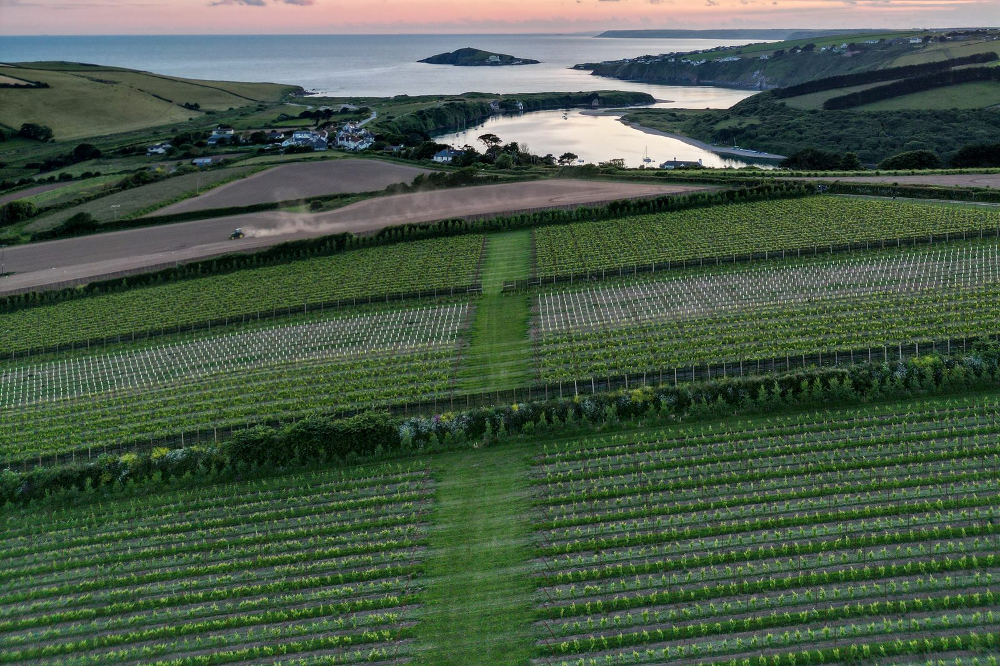

Devon · South West
Bantham Vineyard
Estate-verified · November 2026
A South Devon vineyard by the beach at Bantham, with a vine-to-wine tour and tasting, a horse box bar on the beach in the holidays and summer weekends, and Saturday evening Afterglow sessions.

The visit
Bantham pairs a tour and tasting with the beach: the horse box bar trades every day in the school holidays.
Tour and Tasting
One tour, simply called Tour and Tasting: a vine to wine, soil to cellar experience.
The horse box bar
The Cellar Door on the beach opens every day in every school holiday and bank holiday, and at weekends from June.
Afterglow evenings
Usually every Saturday evening in season, with other food and music pop-ups through the year. Last year’s Oyster and Fizz festival was a hit.
Dogs
Welcome on tours, as long as the other guests sharing the vehicle are happy too.
There’s no direct bus to Bantham. Take a bus to Kingsbridge and a taxi from there, or a bus to Hope Cove or Thurlestone and walk the coastal path to Bantham.
Common questions
When is the Bantham horse box bar open?
Every day in the school holidays and on bank holidays, and at weekends from June.
Can you get to Bantham Vineyard by bus?
Not directly. Take a bus to Kingsbridge and a taxi, or to Hope Cove or Thurlestone and walk the coastal path.
Are dogs allowed on Bantham Vineyard tours?
Yes, as long as the other guests sharing the vehicle are happy.
At a glance
- Region
- The South West
- Where
- Bantham, South Devon
- Tours
- Tour and Tasting
- Beach bar
- Holidays daily; weekends from June
- Evenings
- Afterglow, usually Saturdays
- Dogs
- On tours, if other guests agree
- Without a car
- Bus to Hope Cove or Thurlestone, then the coast path
Also in The South West
- Aldwick Estate Redhill, near Bristol
- Bluestone Vineyard near Salisbury
- Bride Valley Vineyard Litton Cheney, near Dorchester
- Camel Valley near Bodmin
- Carvers Hill Estate near Great Bedwyn, Marlborough